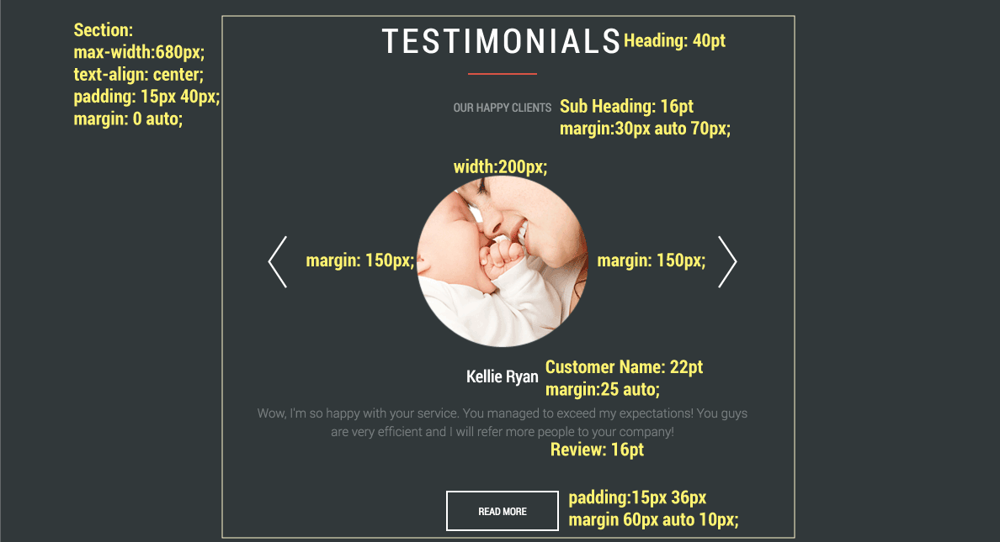
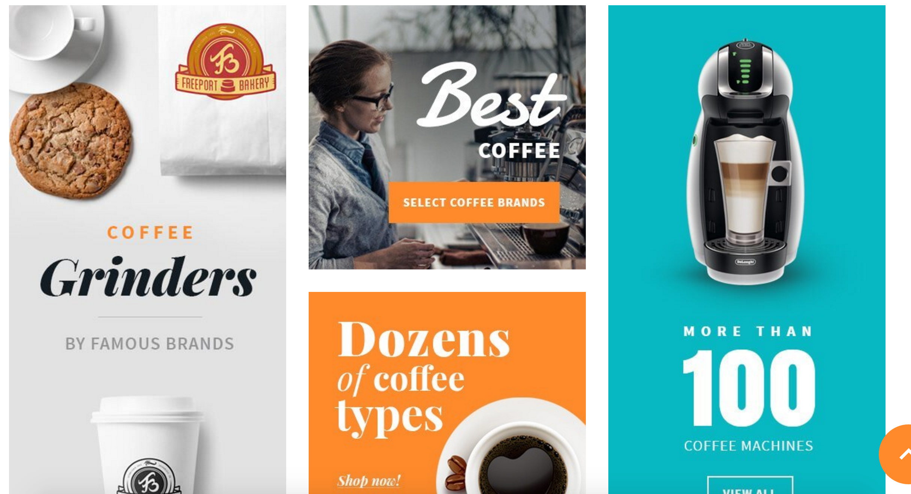
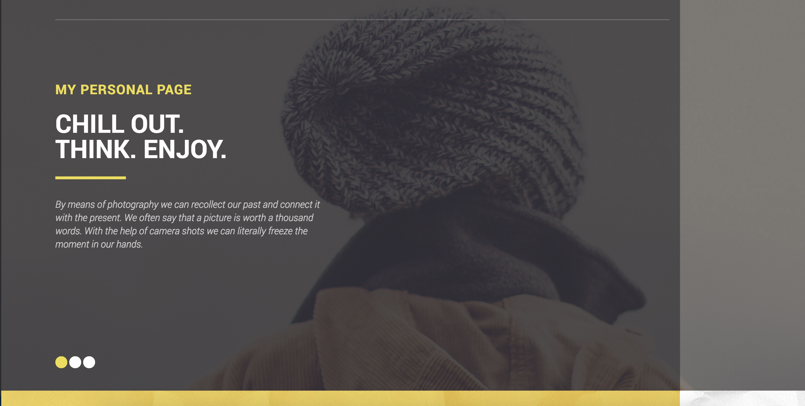
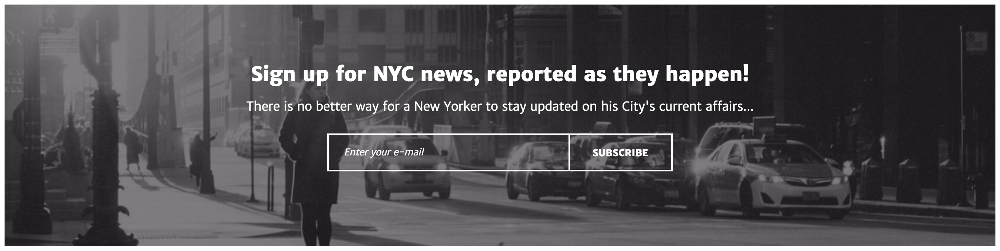

Testimonial Layout
What I Hope To Learn
What I hope to learn from this component is how to expand on the idea of a simple image slider. This
component takes user testimonials and displays them in an image slider styled showcase. Again, I think
this is a unique way to display this information, compared to just some boxes of information this is
interactive and clean looking.
How This Relates To What I Have or Will Learn in WDD
This relates to WDD because it expands on the simple image slider we built in PWA. This takes the
basic slider we built and expands on it with enhanced styling and content.
How Might I Build This?
This could be built using the following elements and made interactive with JavaScript or jQuery.
- Create the component using a section
- Title using a h2 or h3
- The subtitle appears to just be a p element with a heavier font weight.
- The left/right arrows could be images using the img tag, a font based icon, or ASCII content
- The main image, like the arrows, could be an img tag or a CSS background element.
- The customer name could be a h5 or h6 element.
- The customer review area could be created with a p element
- Lastly, the read more button could be created with a button element.
Style Guide
- The font appears to be Roboto Condensed with two font weights, 300 and 700.
- The following colors are used:
- Background:#31383a
- Main Title:#ffffff
- Subtitle:#93989a
- Customer Name:#ffffff
- Customer Review:#777d7f
- Horizontal Rule:#f14d4d
- Button:#ffffff

View Component
Product Grid

What I Hope To Learn
With this component I hope to learn a little more about grids. I know there are various ways to create
different styles of grids, but I feel like they are an important tool to have some knowledge of.
Grids seem to be used more and more to display information in unique and easy interfaces. I hope to
focus and learn more about, specifically, CSS flex grids.
How This Relates To What I Have or Will Learn in WDD
Grids are becoming an important tool to display products, articles, and information. They are used to
show importance, or lack of importance, based on layouts and size. Grids, like a grid of equals, can
show that all the information is equally as important or, through size, draw attention to one item.
It is important for UI development because it helps give the user a direction and some knowledge at
first glance of where to go.
View Component
CTA With Multiple Backgrounds

What I Hope To Learn
With this component I hope to learn more about background properties. This CTA uses an image and two
different color overlays, which looks really unique and well done. I want to learn more about ways to
create overlaying patterns, colors, and shapes with CSS and I think this is a good place to start.
How This Relates To What I Have or Will Learn in WDD
We have learned the basics of creating a CTA and CSS background properties. I think exploring options
like this is the next step in creating truly unique work that stands out from other sites. Adding
something like this seems like a natural progression from a CTA with just an image or color background
to multiple backgrounds mixed together for a unique landing.
View Component
Newsletter Form

What I Hope To Learn
I thought this newsletter signup was interesting. It was placed in the footer and uses transparent
form elements. I didn't realize you could set form elements to be transparent so this caught my eye.
I hope from this I will learn a little bit more about styling form inputs and creative ways to use them.
I think with the right background transparent inputs can be done really well and it is something I haven't
seen too much.
How This Relates To What I Have or Will Learn in WDD
This relates to user interfaces and different ways to make the interface unique. We have spent time working
on inputs and form styling, focusing on making them unique or modern. An example of this is using CSS
frameworks and trying to style those inputs in a way that they do not look like every other Bootstrap,
Foundation, or Skeleton page. This style of input would be an easy way to distinctly change your form
inputs.
View Component
Featured Article Layout

What I Hope To Learn
What I liked about this layout was the combination of other components I picked out. This uses grids
and transparent, it seems like, buttons or links. I hope from this I can learn more about grids and
inputs and different ways to use them. I like the featured article layout of this component and how
it is larger than the other articles, which is something I would like to learn how to do.
How This Relates To What I Have or Will Learn in WDD
Again, I think this really ties into UI/UX design. Grids are an easy way to display information in a
way that inheritly implies importance and are being used more and more. I think this will be an
important area to not only understand but understand how to make the grids stand out and take on a
unique look and style. Combining grids with other techniques from the components I choose will help
to create a more enjoyable user experience and further my skillset.
View Component
About Me
My name is Daniel and I am a web developer in North Carolina. I guess you could tell I also play guitar,
I have been playing for about 20 years or so now. I'm also a veteran, a sometimes artist, a hockey nut,
and a nature lover. I enjoy working on challenging projects that push me to think outside of the box
and push me to better my skills. I am confident with HTML5, CSS3, JavaScript / jQuery, and design. I have
some experience with CSS frameworks, PHP, MySQL, Mustache.js, and AngularJS.